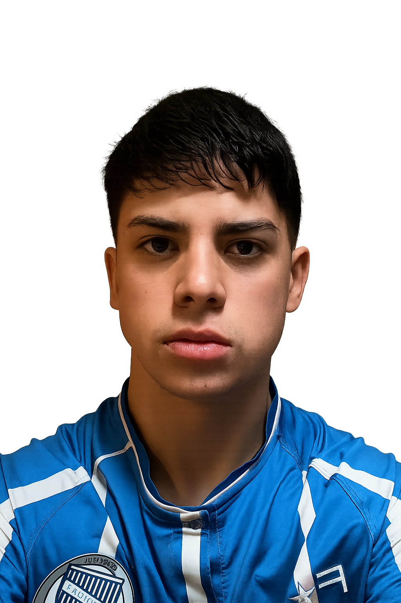

Cubika Architecture Web
Sitio moderno responsivo con animaciones suaves y diseño minimalista.
Ver más
Soy Adrián Fredes, Programador Frontend Junior apasionado por el desarrollo web y la creación de experiencias digitales modernas. Actualmente estudio en la Universidad Tecnológica Nacional (UTN) la Tecnicatura Universitaria en Programación, y en el Instituto IEA la Tecnicatura en Ciencia de Datos e Inteligencia Artificial.
Me especializo en el diseño y desarrollo de sitios web responsivos, rápidos y funcionales, trabajando con tecnologías como HTML, CSS, JavaScript, React, Figma y Framer.
Mi objetivo es ayudar a emprendedores, pequeñas empresas y profesionales independientes a tener presencia online con páginas atractivas y optimizadas, que transmitan confianza y generen resultados.
Además, sigo en constante aprendizaje para perfeccionar mis habilidades en frameworks modernos, optimización SEO y buenas prácticas de accesibilidad, con el fin de entregar proyectos de calidad profesional.


Páginas enfocadas en conversión y portfolios modernos, rápidos y optimizados para SEO.
ConsultaSitios institucionales escalables, seguros y fáciles de mantener.
ConsultaMonitoreo, actualizaciones, rendimiento y seguridad para tu web.
ConsultaConexión con APIs y flujos automáticos para tu negocio.
ConsultaAcompañamiento continuo, mejoras y soporte técnico mensual.
ConsultaCada web realizada incluye 1 mes de mantenimiento gratuito. Luego, el costo del mantenimiento mensual se acuerda según el tipo de proyecto.